EXTERIOR
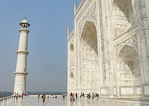
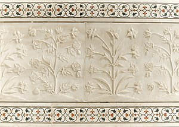
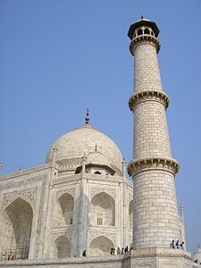
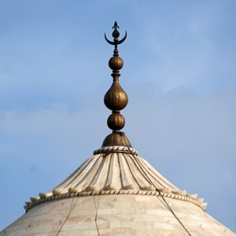
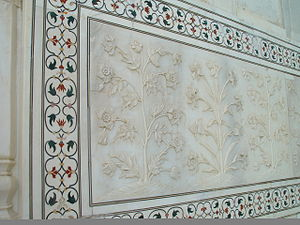
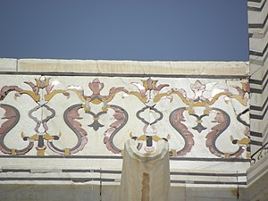
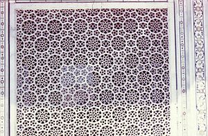
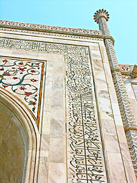
- MYTHS
- Black Taj Mahal: One common myth is that Shah Jahan planned to build a "Black Taj Mahal" across the Yamuna River as a mausoleum for himself. However, there is no historical evidence to support this claim, and it's largely considered a legend.
- Curse of the Taj Mahal: Another myth suggests that anyone involved in the construction of the Taj Mahal met a tragic end or was subjected to a curse. While some workers may have faced hardships during construction, there's no evidence to suggest a curse associated with the monument.
- Shah Jahan's Hand Amputation: A myth suggests that Shah Jahan ordered the hands of the artisans who built the Taj Mahal to be amputated to prevent them from creating a similar masterpiece. This story lacks historical credibility and is widely regarded as folklore.
- Taj Mahal as a Hindu Temple: Some fringe theories claim that the Taj Mahal was originally a Hindu temple dedicated to the god Shiva, repurposed by Shah Jahan. However, this notion is debunked by overwhelming historical and architectural evidence supporting its Mughal origins.
- Taj Mahal's Foundation of Black Marble: It's often said that the foundation of the Taj Mahal is made of black marble, symbolizing the despair of Shah Jahan after Mumtaz Mahal's death. However, the foundation is made of brick and sandstone, not black marble.
INTERIOR
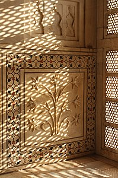
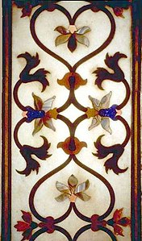
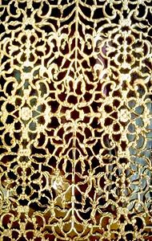
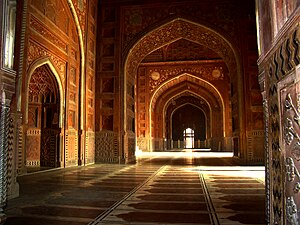
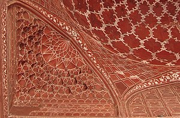
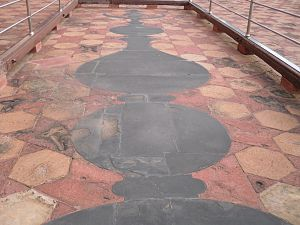
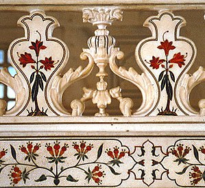
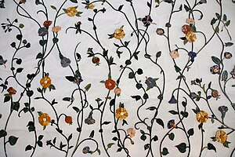
- FACTS
- Mughal Architecture: The Taj Mahal is a prime example of Mughal architecture, characterized by its symmetrical layout, use of white marble, intricate inlay work, and large domes.
- Marble Inlay Work: The Taj Mahal features exquisite marble inlay work, known as pietra dura, which incorporates intricate floral and geometric designs using semi-precious gemstones.
- Garden Design: The Taj Mahal is surrounded by a meticulously planned Charbagh garden, symbolizing paradise in Islamic tradition. It reflects the symmetry and beauty of the monument.
- Historical Significance: Built in the 17th century, the Taj Mahal is a UNESCO World Heritage Site and one of the most famous monuments globally, attracting millions of visitors annually.
- Symbol of Love: Commissioned by Emperor Shah Jahan in memory of his wife Mumtaz Mahal, the Taj Mahal is often considered the ultimate symbol of love and devotion. Its construction represents a profound testament to their eternal bond.